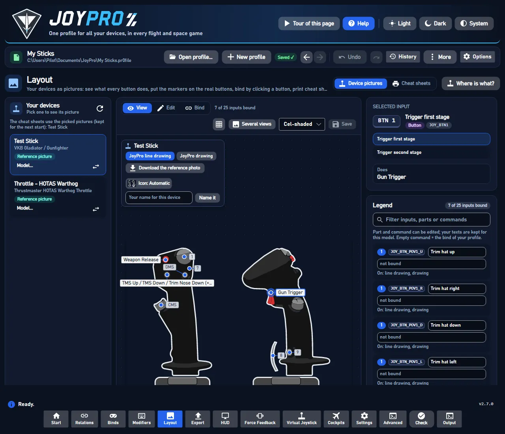
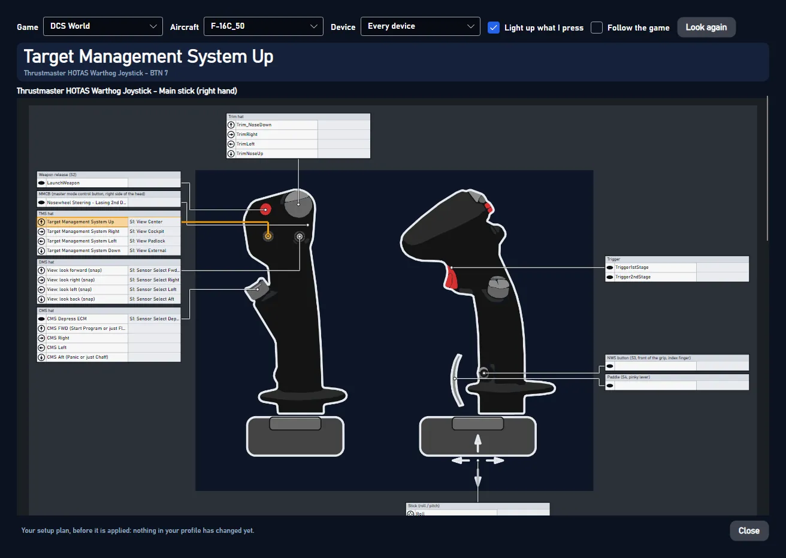

#Dan l-apparat juża stil tiegħu
Kaxxa tal-markamiktubJagħti lill-apparat muri stil tiegħu stess: il-kuluri, it-tipa u l-markers tal-folja ta' referenza tiegħu.
Jinħażen mal-folja tal-apparat u jivvjaġġa ma' Aqsam it-tqassim....
Il-paġna Tqassim turi stampa ta' kull wieħed mill-apparati tiegħek b'dak li tagħmel kull buttuna, hat u assi. Għandha żewġ taqsimiet, li taqleb bejniethom fuq nett: Stampi tal-apparati (apparat wieħed kull darba: ħares, sewwi l-markers, assenja fuq l-istampa) u Folji ta' referenza (stampi li tista' tipprintja tal-apparati kollha tiegħek, għal kull inġenju tal-ajru). Xejn f'din il-paġna ma jibdel logħba, ħlief assenjazzjoni li tagħmel fil-mod Assenja, li tidħol fil-profil tiegħek bħal kull assenjazzjoni oħra.


X'inhu fejn? jiftaħ tieqa bl-apparati kollha tiegħek. Ħdejn kull kontroll tgħid x'jagħmel il-kontroll fil-logħba tiegħek. Issibha fuq il-lemin ta' fuq ta' din il-paġna, fil-paġna Bidu u fil-menu taż-żona tan-notifiki.
Segwi l-logħba jaqleb għall-logħba li qed tilgħab u, f'DCS, għall-inġenju tal-ajru li qed ittajjar. Aktar: X'inhu fejn? Ara x'tagħmel kull buttuna.


JoyPro jista' jpoġġi paġna bl-assenjazzjonijiet tiegħek fuq il-kneeboard ta' kull inġenju tal-ajru ta' DCS. Taqraha dritt fil-kokpit.
Bdilt buttuna? Agħfas Poġġi fuq il-kneeboard mill-ġdid: JoyPro jibdel il-paġni tiegħu stess. Il-paġni l-oħra tal-kneeboard tiegħek jibqgħu. Aktar: Ara l-assenjazzjonijiet tiegħi fuq il-kneeboard ta' DCS.


Stampi tal-apparati tiegħek b'kull assenjazzjoni miktuba ħdejn il-buttuni, biex tipprintjahom jew iżżommhom fuq it-tieni skrin. Immarka l-apparati, il-logħob u l-inġenji tal-ajru, agħżel Ħarsa ġenerali għal kull apparat u/jew Waħda għal kull inġenju tal-ajru, agħfas Oħloq folji ta' referenza. L-istampi (PNG) imorru fil-folder tal-output; il-preview jurihom.


Folja ta' referenza turi x'jagħmlu l-buttuni f'inġenju tal-ajru wieħed, bl-ismijiet tal-kmandi tal-logħba stess meta tagħżilha fil-kaxxa tal-preview. Assenjazzjoni magħmula fil-mod Assenja tinkiteb fil-logħba fl-esportazzjoni li jmiss, bħal assenjazzjoni rrekordjata fil-paġna Assenjazzjonijiet.
L-istrixxa tal-istampi fuq il-canvas għandha buttuna għal kull stampa tal-apparat. Il-kaxxa ħdejn il-buttuna 3D tagħżel l-istil tad-disinn: Linji jew kuluri ċatti taħt kontorni ħoxnin (il-kuluri f'Issettjar > Disinji). L-apparati b'mudell 3D jieħdu Veduta 3D: kaxkar biex iddawwar, ir-rota tagħmel zoom, double click jirrisettja. Id-disinn ċatt huwa dak li jipprintjaw il-folji ta' referenza u dak li fuqu jaħdem il-mod Editja.
JoyPro jagħraf apparat mill-id USB tiegħu, isimu u l-inputs li jirrapporta, imqabbla ma' katalgu ta' diversi mijiet ta' mudelli. Meta ma jistax jgħid (bażi bi grips li jinbidlu, id USB wieħed għal diversi prodotti, apparat mhux magħruf), jistaqsi fuq l-istampa: Liema wieħed hu? b'kaxxi tal-kandidati, L-aktar probabbli l-ewwel, Żomm l-aktar probabbli, Mhux elenkat: fittex fil-katalgu, Mhux issa. Għal apparat mhux magħruf tagħżel ukoll it-tip tiegħu. Mudell... > Agħżel mudell ieħor... jerġa' jistaqsi meta trid.
Meta l-istampa murija ma taf l-ebda pożizzjoni ta' parti ("Għad m'hemm l-ebda pożizzjonijiet fuq din l-istampa"), l-assistent tal-markers ipoġġihom f'minuta:
Mingħajr l-apparat f'idejk, Issa qiegħed: X isemmi l-input li jmiss; klikk ipoġġih hemm, Aktar tard jistaqsi għalih wara l-oħrajn, u l-inputs mingħajr post huma chips li tista' tkaxkar fuq l-istampa. Ħassar l-aħħar bidla iġib lura l-aħħar tqegħid; Aqbeż imur għall-input li jmiss; Waqqaf jagħmel pawża. Aktar fih Assi, Waqqaf, Żid kontroll (kontroll li JoyPro ma jafx: buttuna, swiċċ, hat, mini-stick, encoder, assi) u Neħħi mill-istampa.


Aktar > Postijiet misjuba (sperimentali) ipinġi ċrieki rqaq bit-tikki fuq il-postijiet ta' ritratt li jidhru qishom buttuni, hats jew swiċċijiet. Klikk (jew chip imwaqqa') qrib ċirku jpoġġi l-marker fiċ-ċentru taċ-ċirku. JoyPro ma jafx liema input huwa post, għalhekk ma jpoġġi xejn waħdu; jaħdem fuq ritratti, mhux fuq id-disinji ta' JoyPro, u jaħdem offline.
Fuq stampa b'pożizzjonijiet magħrufa, Tabelli (toolbar) jpinġi d-dehra tal-folja ta' referenza ta' JoyPro 1: tabella għal kull grupp ta' kontrolli madwar l-istampa, linji lejn il-partijiet, ir-relazzjoni assenjata għal kull ringiela u l-assenjazzjoni bil-modifikatur f'kolonna oħra. Il-kaxxa tad-dehra minn qabel tagħżel x'juru r-ringieli: Ismijiet tar-relazzjonijiet, jew logħba u inġenju tal-ajru wieħed bit-titli tal-menu ta' dik il-logħba. Fil-mod Editja tkaxkar tabella (tiġi mwaħħla), it-tarf tal-lemin tagħha, segment ta' linja jew post; il-pannell tal-ġenb għandu Kolonna tal-modifikaturi, Ringiela + / Ringiela −, Imwaħħal, Itlaq mill-ġdid linja, Neħħi linja, Aqsam f'tabelli singoli, Igruppa mill-ġdid, Arranġa awtomatikament u Irrisettja. Relazzjoni mkaxkra minn Kebbes relazzjoni fuq ringiela u mwaqqa' fuq ringiela tiġi assenjata hemm.


Diversi vedut ipoġġi aktar stampi ta' apparat wieħed fuq paġna (quddiem u ġenb, biex kull buttuna tkun koperta): Żid veduta, L-immaġni tiegħek..., Irranġa, Editja din il-veduta, Neħħi l-veduta, Neħħi l-paġna, Lura għal stampa waħda. Il-format tal-paġna huwa A4 jew Letter għall-istampar, 16:9 / 21:9 / 32:9 għal skrin. Il-folji ta' referenza jipprintjaw il-paġna.
Meta input ikun nieqes jew fil-post ħażin, irranġah fil-mod Editja (kaxkar, Żid kontroll, Neħħi mill-istampa, ibdel l-isem fil-leġġenda). Kollox jinżamm fuq dan il-PC bħala s-saff tiegħek fuq id-data ta' JoyPro. Ibgħat korrezzjoni lil JoyPro... jissejvja l-bidla bħala fajl żgħir u jiftaħ formola ta' issue mimlija minn qabel fuq GitHub; hemmhekk tiddeċiedi jekk tibgħatha. Mudell... > Irrisettja għad-default ta' JoyPro... ineħħi l-bidliet kollha tiegħek ta' apparat (jistaqsi l-ewwel; Reġġa' lura r-reset jerġa' jpoġġihom).
Modi V / E / B, N poġġi marker (fajl tat-tqassim), Del neħħi, Ctrl+Z / Ctrl+Y ħassar u erġa' agħmel, Ctrl+S issejvja, + / - zoom, 0 jew F adatta, il-vleġeġ iċaqilqu ftit fil-mod Editja (Shift: 10 px), Alt ikaxkar mingħajr snapping, fajl ta' stampa mwaqqa' jsir ir-ritratt tiegħek tal-apparat.
flowchart TD D["Apparat<br/>(id USB, isem, inputs)"] --> I["DeviceIdentifier<br/>+ katalgu tal-apparati"] I --> R["Referenza tal-apparat:<br/>mudell, partijiet, stampi"] R --> C["DeviceMarkerCanvas<br/>(View / Edit / Bind)"] P["Assenjazzjonijiet tal-profil<br/>(binds list)"] --> C C --> B["binds set"] R --> S["Folja tal-callouts:<br/>tabelli u linji"] S --> L["layout render:<br/>PNG għal kull apparat<br/>u inġenju tal-ajru"] S --> K["layout kneeboard:<br/>DCS Kneeboard jew<br/>OpenKneeboard"]
MainWindowViewModel.LayoutWorkspace.cs (modi, ħassar, assenja u ħelles), LayoutReference.cs (l-istampa ta' referenza, issejvja, host tal-assistent), LayoutCallouts.cs (tabelli u linji), MultiView.cs, CheatSheets.cs, ReferencePhotos.cs, Device3D.cs, DeviceIcons.cs, ModelChoice.cs, LayoutReset.cs, UnmappedPress.cs; DeviceReferenceViewModel*.cs, MarkerAssistantViewModel.cs, SheetStyleViewModel.cs. Il-canvas: Views/Controls/DeviceMarkerCanvas.cs, CalloutSheetCanvas.cs, MultiViewCanvas.cs.<data>\DeviceReference): grips.json (tweġibiet dwar il-mudell), Layouts\ (il-pożizzjonijiet tiegħek għal kull stampa), Callouts\ (tabelli u linji), MultiView\, ReferencePhotos\<model>\ (iċċekkjati b'SHA-256), Corrections\, ResetBackups\; id-definizzjonijiet tal-apparati tiegħek f'<data>\Devices. L-istil globali tal-folja f'sheet-style.json.engine layout suggest (sib stampa għal kull apparat, tqassim fuq stampa li għażilt), engine layout render (il-folji ta' referenza), engine layout image (il-fajl tat-tqassim li juża profil), engine layout template-inspect / engine layout template-save (l-editur tal-fajl tat-tqassim), engine layout callouts, engine layout multiview, engine layout titles (titli tal-menu tal-logħob), engine hud devices (mudelli tal-apparati mqabbda), engine devices reference (identifikazzjoni, postijiet misjuba), engine binds list.Id-dokumentazzjoni tal-funzjonijiet wara din il-paġna, iġġenerata mir-repository:
152 kontrolli, moqrija mis-sors tal-programm: 152 miktuba, 0 bil-fatti mis-sors (tooltip, kumment fil-kodiċi, sejħa lill-magna), 0 għad iridu jiġu estiżi.
Jagħti lill-apparat muri stil tiegħu stess: il-kuluri, it-tipa u l-markers tal-folja ta' referenza tiegħu.
Jinħażen mal-folja tal-apparat u jivvjaġġa ma' Aqsam it-tqassim....
Tooltip Jieħu l-kuluri kollha, il-font u d-disinn tal-preset
Jagħti lill-istil tal-folja kull kulur, it-tipa u d-disinn tal-preset magħżul hawn fuq.
L-editur u l-folji ta' referenza jużawh minnufih; jinħażen mill-ewwel.
Tooltip Ħassar dan il-preset tiegħek
Iħassar il-preset tiegħek magħżul. L-istil li qed jintuża ma jinbidilx.
Tooltip Iżomm dan l-istil taħt l-isem, biex terġa' tapplikah aktar tard
Iżomm l-istil attwali tal-folja bħala preset bl-isem miktub hawn fuq, biex terġa' tapplikah aktar tard.
Isem ta' wieħed mill-presets ta' JoyPro jiġi rrifjutat; preset tiegħek bl-istess isem jiġi sostitwit.
Tooltip Żid modifikatur u l-kulur tiegħu
Iżid ringiela għal kulur ta' modifikatur. Ikteb il-modifikatur kif isejħulu l-assenjazzjonijiet tiegħek: il-markers tiegħu u l-bar fuq il-kolonna tiegħu jieħdu dak il-kulur.
Ineħħi dan il-kulur tal-modifikatur mill-istil tal-folja; il-markers tal-assenjazzjonijiet b'dak il-modifikatur jerġgħu jieħdu l-kulur tat-tip tagħhom.
Tooltip Agħfas buttuna, ċaqlaq assi jew Hat: ir-ringiela tiegħu tixgħel u l-funzjoni tiegħu tidher fuq nett. Jaqra l-apparati tiegħek biss sakemm din it-tieqa tkun miftuħa.
Tieqa tat-tqassim, mixgħul minn qabel: agħfas buttuna, ċaqlaq assi jew hat u r-ringiela tiegħu tixgħel; il-funzjoni tiegħu tissemma b'ittri kbar fuq nett.
JoyPro jaqra l-apparati tiegħek biss waqt li t-tieqa tkun miftuħa u mhux minimizzata, u wara ftit żmien mingħajr input biss kull 250 ms.
Tooltip Jaqleb għal-logħba li qed tilgħab u, f'DCS, għall-inġenju tal-ajru li qed ittir (jeħtieġ il-hook ta' DCS ta' JoyPro). Mingħajru l-għażla tiegħek tibqa'.
Tieqa tat-tqassim: taqleb għal-logħba li qed tilgħab u, f'DCS, għall-inġenju tal-ajru li qed ittajjar.
Mingħajr dan, l-għażla tiegħek tibqa'.
Tooltip Jerġa' jaqra l-assenjazzjonijiet (wara li bdilt xi ħaġa)
Tieqa tat-tqassim: terġa' taqra l-assenjazzjonijiet, pereżempju wara li bdilt xi ħaġa fil-paġna Assenjazzjonijiet.
Jagħlaq it-tieqa tat-tqassim. JoyPro jiftakar fejn kienet u x'uriet; tiftaħ hemm id-darba li jmiss.
Jekk titħalla miftuħa meta JoyPro jagħlaq, terġa' tiġi fil-bidu li jmiss.
Tooltip Kull apparat b'dak li jagħmel kull kontroll f'logħba u inġenju tal-ajru wieħed, fit-tieqa tiegħu stess (anke għal tieni monitor); dak li tagħfas jixgħel
X'inhu fejn? jiftaħ it-tieqa tat-tqassim: tieqa għaliha b'kull apparat u l-funzjoni fuq kull kontroll għal logħba u inġenju tal-ajru wieħed.
Dak li tagħfas jixgħel.
Tooltip L-istampa ta' apparat wieħed: x'jagħmlu l-inputs tiegħu, editja l-markers, assenja fuq l-istampa
Juri s-sezzjoni Stampi tal-apparati: apparat wieħed kull darba b'dak li jagħmlu l-inputs tiegħu, fejn tibdel il-markers u tassenja fuq l-istampa.
Tooltip Stampi stampabbli tal-apparati tiegħek b'dak li tagħmel kull buttuna (ma jbiddel l-ebda logħba)
Juri s-sezzjoni Folji ta' referenza: stampi li tista' tistampa tal-apparati tiegħek b'dak li tagħmel kull buttuna.
Meta tagħmilhom, l-ebda logħba ma tinbidel.
Tooltip Sib l-istampi tal-apparati tiegħek mill-ġdid
Sib l-apparati tiegħi: ifittex stampa ta' kull apparat imqabbad u jelenkahom fuq ix-xellug.
Tooltip Liema mudell hu dan l-apparat (agħżel ieħor, għid li mhuwiex l-apparat tiegħek, reġġa' lura l-aħħar għażla) u Irrisettja għad-default ta' JoyPro
Jiftaħ il-menu tal-mudell tal-apparat: Agħżel mudell ieħor..., Dan mhuwiex l-apparat tiegħi, Reġġa' lura l-aħħar għażla tal-mudell, Irrisettja għad-default ta' JoyPro... u, wara reset, it-treġġigħ lura tiegħu.
Jerġa' jistaqsi Liema wieħed hu? għal dan l-apparat, bil-kandidati tiegħu, u tfittxija fil-katalgu klikk waħda 'l bogħod.
Użah meta JoyPro juri l-mudell il-ħażin.
Jgħid li l-mudell muri huwa ħażin: l-apparat jiġi ttrattat bħala mhux magħruf u jinżamm bħala t-tip tiegħu sakemm tagħżel il-mudell tiegħu fil-mistoqsija fuq l-istampa.
Iġib lura t-tweġiba ta' qabel dwar il-mudell ta' dan l-apparat.
Tooltip Kull ma bdilt fl-istampa ta' dan l-apparat imur: il-pożizzjonijiet tal-markers, it-tabelli u l-linji, il-partijiet b'isem ġdid, ir-ritratt tiegħek, id-definizzjoni tiegħek u l-fajl tat-tqassim li juża l-profil. Jistaqsi l-ewwel; Reġġa' lura r-reset iġibu lura.
Ineħħi kull ma bdilt fl-istampa ta' dan l-apparat: il-pożizzjonijiet tal-markers, it-tabelli u l-linji, il-partijiet li tajthom isem ġdid, ir-ritratt tiegħek, id-definizzjoni tiegħek, u l-fajl tat-tqassim li juża l-profil.
Jistaqsi l-ewwel; Reġġa' lura r-reset iġib kollox lura.
"Reġġa' lura r-reset ta' <device>": iġib lura kull ma neħħa Irrisettja għad-default ta' JoyPro....
Jiftaħ Ibdel l-apparat b'dan l-apparat bħala l-qadim: l-assenjazzjonijiet tiegħu jiċċaqilqu għal apparat ieħor input b'input, b'dehra minn qabel l-ewwel.
Għandu bżonn profil miftuħ; l-applikazzjoni hija bidla waħda fl-Istorja.
Tooltip It-tqassim tiegħek ta' JoyPro 1 (fajls .layout bl-istampi tiegħek): JoyPro jikkopjahom u juri għall-apparati li għalihom saru. Il-folder qadim jinqara biss.
Jagħżel il-folder ta' JoyPro 1 tiegħek: JoyPro jikkopja l-fajls .layout bl-istampi tiegħek u jurihom għall-apparati li għalihom saru.
Il-folder il-qadim jinqara biss.
Tooltip Jiftaħ tiftixa ta' immaġni għall-manifattur u l-mudell tal-apparat magħżul
Jiftaħ fil-browser tiegħek tfittxija ta' stampi għall-manifattur u l-mudell tal-apparat magħżul.
Salva stampa tajba, poġġiha fil-kaxxa ta' taħt u agħfas Uża r-ritratt.
Jagħżel fajl ta' stampa tal-apparat għal Uża r-ritratt.
Jibni tqassim fuq l-istampa li għażilt: il-magna tqiegħed il-buttuni u l-assi reali tal-apparat fuqha bħala markers u, meta jkun hemm profil miftuħ, taħżnu bħala t-tqassim tal-apparat għall-folji ta' referenza.
Tooltip Jiftaħ il-folder fl-Explorer (JoyPro joħolqu jekk ikun meħtieġ)
Jiftaħ il-folder għall-folji ta' referenza tal-komunità li rċevejt.
Fajls tal-istampi li tpoġġi hemm jiġu offruti bħala tqassim 2D tal-apparati tagħhom fl-istrixxa tal-istampi.
Issuġġerixxi jfittex stampi tal-apparati mqabbda.
Jinżamm għall-bidu li jmiss.
Issuġġerixxi jfittex ukoll stampi tal-apparati li għalihom il-profil tiegħek għandu assenjazzjonijiet, imqabbda jew le.
Jinżamm għall-bidu li jmiss.
Issuġġerixxi jaħżen fil-profil l-istampa li jagħżel għal kull apparat.
Jinżamm għall-bidu li jmiss.
Tooltip Uża l-istampi magħżula għall-folji ta' referenza
Juża l-fajls tat-tqassim tas-suġġerimenti magħżula għall-folji ta' referenza u jimmarka dawk l-apparati hemm.
L-għażliet jinżammu għall-bidu li jmiss, sakemm l-istampa tal-apparat ma terġax tiġi ssettjata mill-ġdid jew tqassim ieħor jieħu postha.
Jiftaħ il-fajl tat-tqassim tas-suġġeriment magħżul fl-editur tal-fajl tat-tqassim: jgħabbi l-fajl u jurih fuq il-kanvas.
Jerġa' jgħabbi l-fajl f'Fajl tat-tqassim fl-editur tal-fajl tat-tqassim.
Tooltip Ħares: x'jagħmel kull input (V)
Jibdel il-mod tal-istampa: Dehra turi x'jagħmel kull input, Editja jċaqlaq il-markers u jiftaħ l-għodod tal-editjar, Assenja jassenja relazzjoni lil input ikklikkjat.
Poġġi marker: il-klikk li jmiss fuq l-istampa jqiegħed marker ġdid hemm, bl-input, it-tip u l-modifikaturi ssettjati fil-pannell fuq il-lemin.
Ireġġa' lura l-aħħar ċaqliq jew bidla ta' marker fuq l-istampa; it-tooltip isemmiha.
Jerġa' jagħmel il-bidla tal-marker li tħassret.
Il-markers imkaxkra jwaħħlu mal-markers l-oħra.
Żomm Alt waqt li tkaxkar biex tqiegħed wieħed b'mod ħieles.
Juri grilja ta' 10 px fuq l-istampa u jwaħħal il-markers imkaxkra magħha.
Jinżamm għall-bidu li jmiss.
Juri t-tabelli tal-leġġenda u l-linji ta' konnessjoni tal-fajl tat-tqassim fuq l-istampa, kif jiġbduhom il-folji ta' referenza; biddilhom taħt Tabelli, linji u stil tat-tikketti fuq il-lemin.
Jinżamm għall-bidu li jmiss.
Tooltip Arranġa awtomatikament: it-tabelli u l-linji mill-ġdid; it-tabelli mwaħħlin (imċaqalqin minnek) jibqgħu fejn huma
Jerġa' jirranġa t-tabelli u l-linji; tabelli mwaħħla jibqgħu fejn huma.
Ctrl+Z ireġġgħu lura.
Mixgħul: tabelli madwar l-istampa b'linji għall-partijiet, bħall-folji ta' referenza ta' JoyPro 1.
Mitfi: tikketti ħdejn il-markers.
Diversi vedut: jiftaħ il-paġna tal-apparat b'diversi stampi, jew jibda waħda bl-istampa murija.
L-istampa għandha bżonn markers imqiegħda l-ewwel.
Tooltip Dawwar l-apparat (kaxkar; ir-rota tagħmel zoom; double click jirrisettja): render ta' JoyPro ta' mudell 3D tal-apparat. Mitfi: id-disinn ċatt, li huwa dak li jistampaw il-folji ta' referenza u li fuqu jaħdem il-mod Editja.
Juri l-veduta 3D ta' JoyPro tal-apparat: kaxkar biex iddawru, ir-rota tagħmel zoom, klikk doppju jerġa' jibda mill-ġdid.
Mitfi: id-disinn ċatt, li huwa dak li jistampaw il-folji ta' referenza u dak li fuqu jaħdem il-mod Editja.
Isalva l-istampa murija: il-pożizzjonijiet tal-markers, it-tabelli u l-linji; għal fajl tat-tqassim jikteb il-fajl.
L-awtosalvataġġ iżommhom ukoll; Salva jbattal il-passi ta' tħassir tal-bidliet.
Iniżżel kull ritratt ta' referenza li jaf JoyPro għal dawn l-apparati mqabbda, fl-isfond b'bar tal-progress; kull wieħed jiġi ċċekkjat mar-rekord ta' JoyPro.
Jgħodd bħala l-iva tiegħek għal dawn l-apparati.
Mhux issa: l-ebda ritratt ma jitniżżel; JoyPro jerġa' jistaqsi fis-sessjoni li jmiss.
Tooltip Niżżel fl-isfond ir-ritratti ta' referenza ta' kull apparat li jidher (Issettjar > Privatezza)
Iniżżel ir-ritratti ta' referenza offruti issa u jixgħel Niżżel ir-ritratti ta' referenza awtomatikament: ir-ritratti ta' kull apparat li jidher jitniżżlu fl-isfond minn hemm 'il quddiem.
Tooltip Tniżżilx ritratti ta' dawn l-apparati; id-disinji ta' JoyPro jibqgħu
Jgħid le għar-ritratti ta' dawn l-apparati: xejn ma jitniżżel u d-Disinji ta' JoyPro jibqgħu.
Issettjar > Privatezza jista' jerġa' jistaqsi.
Tooltip Stampa oħra tal-apparat fuq il-paġna: id-disinji u r-ritratti ta' JoyPro tiegħu, jew immaġni tiegħek
Jelenka l-istampi l-oħra tal-apparat li għadhom mhumiex fuq il-paġna; dik li tagħżel tiżdied bil-markers, it-tabelli u l-linji tagħha.
Stampa mingħajr markers imqiegħda ma tistax tiżdied.
Tooltip Immaġni tiegħek bħala veduta (ritratt tal-ġenb, tikketta; m'għandhiex markers)
Iżid stampa tiegħek mal-paġna bħala veduta.
Tiġi kkupjata fil-folder ta' JoyPro u m'għandhiex markers.
Tooltip Il-vedut ħdejn xulxin, kbar daqs kemm tippermetti l-paġna
Ipoġġi l-vedut ħdejn xulxin, kbar daqskemm tħalli l-paġna; il-paġna tinħażen minnufih.
Tooltip Il-markers, it-tabelli u l-linji tagħha fl-editur normali (il-paġna turihom wara)
Jiftaħ l-istampa tal-veduta magħżula fl-editur normali biex tibdel il-markers, it-tabelli u l-linji tagħha; il-paġna turi l-bidliet wara.
Mhux għal stampi tiegħek.
Ineħħi l-veduta magħżula mill-paġna.
Tooltip L-apparat jerġa' juri l-istampa waħda tiegħu
Ineħħi l-paġna b'diversi vedut. L-apparat jerġa' juri l-istampa waħda tiegħu; il-markers, it-tabelli u l-linji tal-vedut jibqgħu mal-istampi tagħhom.
Tooltip Il-paġna tibqa' (il-folji ta' referenza jistampawha); dan jerġa' juri l-istampa waħda
Juri l-istampa waħda mill-ġdid. Il-paġna b'diversi vedut tibqa' salvata u l-folji ta' referenza xorta jistampawha.
Juri din l-istampa tal-apparat: it-tqassim tiegħek, ir-ritratt tiegħek, ritratt tal-manifattur, id-disinn ta' JoyPro jew tqassim 2D.
Jekk tagħżel stampa ta' referenza minflok tqassim 2D, l-apparat jieħu lura t-tqassim ta' qabel tiegħu.
Tooltip Niżżel ir-ritratt tal-prodott tal-manifattur li minnu sar dan id-disinn (maħżun biss fuq dan il-PC, qatt ma jinbagħat)
Iniżżel ir-ritratt tal-prodott tal-manifattur li minnu sar dan id-disinn, miżmum fuq dan il-PC biss.
Mingħajr l-iva tiegħek għal dan il-mudell, jistaqsi l-ewwel u jniżżel wara Iva.
Iwieġeb il-mistoqsija dwar ir-ritratt tal-manifattur: Iva jniżżlu u jurih għal dan il-mudell, Le jżomm id-disinn ta' JoyPro, Dejjem għall-apparati kollha tiegħi jippermetti r-ritratti ta' kull apparat, Qatt iwaqqafhom kollha.
Issettjar > Privatezza jibdlu lura.
Tooltip Iftaħ il-folder bir-ritratt salvat
Jiftaħ l-Explorer bir-ritratt ta' referenza mniżżel magħżul.
Tooltip L-ikona tal-apparat fuq il-kartijiet tal-apparati, fil-lista tal-assenjazzjonijiet u fuq l-HUD: agħżel waħda mill-istampi tiegħu jew stampa tiegħek
Jiftaħ l-għażla tal-ikona: madum wieħed għal kull stampa tal-apparat, Awtomatiku, u L-istampa tiegħek....
L-ikona tidher fuq il-karti tal-apparati, fil-lista tal-assenjazzjonijiet u fuq il-HUD.
Tooltip Żomm l-isem fil-profil
Iżomm l-isem miktub fil-kaxxa bħala l-isem tiegħek għal dan l-apparat.
JoyPro jurih kullimkien minflok l-isem tal-apparat; il-logħob jibqgħu jieħdu l-apparat reali.
Ineħħi l-isem li tajt lil dan l-apparat: l-isem reali tal-apparat jerġa' jidher kullimkien.
Jagħlaq l-għażla tal-ikona; l-ikona tibqa' kif inhi.
Jagħmel din l-istampa l-ikona tal-apparat; Awtomatiku jħalli lil JoyPro jerġa' jagħżel.
Tooltip Fajl tal-istampa tiegħek isir l-ikona (maqtugħ minn sfond sempliċi u mdawwar kwadru)
Jagħmel fajl ta' stampa tiegħek l-ikona tal-apparat: maqtugħa minn sfond sempliċi u maqtugħa kwadra.
Tooltip Staqsi għal dan l-input wara l-oħrajn
Aktar tard: l-assistent tal-markers jitlob dan l-input wara l-oħrajn.
Tooltip Agħfas buttuna jew direzzjoni tal-hat fuq l-apparat li jmiss
L-assistent tal-markers jistenna t-tagħfis li jmiss: agħfas buttuna jew direzzjoni ta' hat fuq l-apparat muri, imbagħad ikklikkja l-post tiegħu fuq l-istampa.
Wara 30 sekonda mingħajr tagħfis jieqaf u jgħid hekk.
Jaqbeż l-input li qed jitlob issa l-assistent tal-markers u jmur għal dak li jmiss.
Tooltip Ħu lura l-aħħar tqegħid
Ireġġa' lura l-aħħar tqegħid tal-assistent tal-markers: il-parti tmur fejn kienet qabel, jew lura fost iċ-chips meta ma kellhiex post.
Ctrl+Z fuq il-paġna jagħmel l-istess.
Tooltip Salva l-markers (u d-definizzjoni tal-apparat tiegħek)
Iwaqqaf l-assistent tal-markers u jsalva l-pożizzjonijiet tal-markers tal-istampa murija.
Meta l-apparat ma kienx magħruf jew ħa inputs ġodda, jinħażen ukoll bħala d-definizzjoni tal-apparat tiegħek.
Jagħlaq l-assistent tal-markers fuq l-istampa.
Il-postijiet li diġà saru jibqgħu bħala bidliet mhux salvati; Salva jżommhom.
Tooltip Assi, Waqqaf, żid kontroll li JoyPro ma jafx, neħħi parti mill-istampa
Juri l-għodod rari tal-assistent tal-markers: Assi, Waqqaf, Postijiet misjuba, Żid kontroll u Neħħi mill-istampa.
Tooltip Ċaqlaq assi tal-apparat li jmiss
L-assistent tal-markers jistenna assi: ċaqlaq assi wieħed tal-apparat sal-aħħar, imbagħad ikklikkja l-post tiegħu fuq l-istampa.
Jagħmel pawża lill-assistent tal-markers: ma jibqax jistenna tagħfis.
Ibda jkompli, Spiċċa jsalva dak li tqiegħed.
Tooltip Ċrieki fuq il-postijiet tar-ritratt li jidhru qishom buttuni, hats jew swiċċijiet; klikk qrib ċirku jpoġġi l-marker fiċ-ċentru tiegħu. JoyPro ma jafx liema input huwa post.
Jiġbed ċrieki bit-tikki fuq il-postijiet ta' ritratt li jidhru qishom buttuni, hats jew swiċċijiet; klikk qrib ċirku jqiegħed il-marker fiċ-ċentru tiegħu.
JoyPro ma jafx liema input huwa post, allura ma jqiegħed xejn waħdu.
Tooltip Agħfas (jew ċaqlaq) kull input tal-kontroll fuq l-apparat tiegħek, imbagħad ikklikkja postu fuq l-istampa
Iżid kontroll li JoyPro ma jafx, tat-tip magħżul fil-kaxxa: agħfas jew ċaqlaq kull input tiegħu kif mitlub, imbagħad ikklikkja l-post tiegħu fuq l-istampa.
Spiċċa jsalvah bħala d-definizzjoni tal-apparat tiegħek.
Tooltip Neħħi l-parti magħżula mill-istampa (JoyPro poġġieha f'post ħażin)
Ineħħi l-parti magħżula mill-istampa: ma tibqax tidher hemm.
Erġa' qiegħedha b'Ibda jew bi klikk wara li tagħżilha; Ħassar l-aħħar bidla jġibha lura.
Iniżżel il-vedut 3D ta' dawn l-apparati mqabbda mir-releases ta' JoyPro; Veduta 3D imbagħad tidher fil-paġna Tqassim u fl-istampa tal-paġna Assenjazzjonijiet.
Mhux issa: il-vedut 3D ma jitniżżlux; l-offerta terġa' tiġi f'sessjoni oħra aktar tard.
Tooltip Niżżel il-vedut 3D u l-istampi tal-kokpits mir-releases ta' JoyPro mingħajr ma tistaqsi (Issettjar > Privatezza)
Iniżżel il-vedut 3D offruti issa u jissettja Stampi mir-releases ta' JoyPro fuq dejjem: il-vedut 3D u l-pakketti tal-istampi tal-paġna Kokpits jitniżżlu mingħajr ma jistaqsi minn hemm 'il quddiem.
Tooltip Tfittixx vedut 3D u stampi tal-kokpits fir-releases ta' JoyPro (Issettjar > Privatezza); id-disinn ċatt jibqa'
Jissettja Stampi mir-releases ta' JoyPro fuq qatt: JoyPro ma jibqax ifittex vedut 3D u pakketti tal-istampi tal-kokpits; id-disinn ċatt jibqa'.
Jibda l-assistent tal-markers għall-inputs li għad m'għandhomx post fuq l-istampa: agħfas kull wieħed fuq l-apparat, imbagħad ikklikkja l-post tiegħu.
Tooltip Isalva l-pożizzjonijiet u l-kontrolli tiegħek bħala fajl żgħir u jiftaħ formola ta' issue mimlija minn qabel fil-paġna GitHub ta' JoyPro; hemmhekk tiddeċiedi jekk tibgħatiex
Isalva l-pożizzjonijiet u l-kontrolli tiegħek bħala fajl żgħir u jiftaħ fil-browser tiegħek formola ta' issue mimlija minn qabel fuq il-paġna GitHub ta' JoyPro; int tiddeċiedi hemm jekk tibagħtiex.
JoyPro waħdu ma jibgħat xejn.
Tooltip Agħfas kull buttuna tal-apparat u ikklikkja fejn hi fuq l-istampa; għal apparati mhux magħrufa jisma wkoll il-partijiet
Jiftaħ l-assistent tal-markers fuq l-istampa: agħfas kull buttuna tal-apparat u kklikkja fejn tinsab.
Għal apparati mhux magħrufa jsemmi wkoll il-partijiet.
Tooltip Tqassim li xi ħadd qasam (joypro-device-layout .json)
Jimporta pożizzjonijiet tal-markers li qasam xi ħadd: jinżammu għall-mudell u r-ritratt tagħhom, bit-tabelli u l-linji, ritratt ġewwa l-fajl u paġna b'diversi vedut meta l-fajl ikollu dawn.
Jagħżel dan il-mudell bħala l-apparat. L-istampa turih minnufih u JoyPro jiftakar it-tweġiba.
Għal apparat li JoyPro ma jafx: jgħid x'tip ta' apparat hu.
"Probabbli" jimmarka r-raden ta' JoyPro.
Tooltip Ħu l-ewwel wieħed u tistaqsix mill-ġdid
Jieħu l-ewwel madum bħala l-mudell tal-apparat u ma jerġax jistaqsi.
Jiftaħ tfittxija fil-katalgu kollu tal-apparati meta l-mudell it-tajjeb mhux fost il-madum; agħżlu mir-riżultati.
Jagħlaq il-mistoqsija mingħajr tweġiba; terġa' tiġi meta l-apparat jerġa' jidher.
Tooltip Marker ġdid f'nofs l-istampa (jew ixgħel 'Poġġi marker' u ikklikkja l-post)
Iżid marker f'nofs l-istampa tal-fajl tat-tqassim bl-input, it-tip u l-modifikaturi ssettjati hawn taħt.
Ctrl+Z ireġġgħu lura.
Jgħid li dan l-input assenjat huwa t-tagħfis tal-hat.
Jinħażen bħala d-definizzjoni tiegħek tal-apparat, u l-leġġenda u t-tabelli juru t-tagħfis minn hemm 'il quddiem.
Iwaqqaf l-immappjar tat-tagħfis ta' hat: JoyPro ma jibqax jistenna t-tagħfis u r-ringiela tibqa' "mhux immappjat".
Chip ta' modifikatur tal-marker tal-fajl tat-tqassim: immarkat, il-marker juri l-assenjazzjoni b'dan il-modifikatur miżmum.
Tooltip Agħti lill-marker magħżul dan l-input, tip u modifikatur
Jagħti lill-marker magħżul tal-fajl tat-tqassim l-input, it-tip u l-modifikaturi ssettjati hawn fuq.
Input li marker ieħor diġà għandu jiġi rrifjutat.
Tooltip Neħħi l-marker (Del)
Ineħħi l-marker magħżul mill-fajl tat-tqassim.
Ctrl+Z iġibu lura; Salva jikteb il-fajl.
Jagħżel il-kombinazzjoni ta' modifikaturi li tieħu l-assenjazzjoni li jmiss.
Assenja lil dan l-input jassenja biha, u l-lista turi x'jaqbel.
Jassenja r-relazzjoni magħżula fil-lista lill-input magħżul, bil-kombinazzjoni ta' modifikaturi magħżula.
Ir-relazzjoni ta' qabel tal-input tinħeles l-ewwel; il-buttuni jieħdu relazzjonijiet ta' buttuni, l-assi relazzjonijiet ta' assi.
Tooltip Neħħi l-assenjazzjoni minn dan l-input
Ineħħi l-assenjazzjoni mill-input magħżul: ir-relazzjoni żżomm l-issettjar l-ieħor tagħha iżda titlef dan l-input.
Il-bidla tidħol fil-profil tiegħek u fl-Istorja tiegħu.
Tooltip It-tieni kolonna tat-test bl-assenjazzjoni tal-modifikatur (shift)
Juri jew jaħbi t-tieni kolonna tat-tabella magħżula bl-assenjazzjoni tal-modifikatur.
Ctrl+Z ireġġgħu lura.
Tooltip Assi jikseb ringiela taż-żona (0-20 %, 20-40 % ...); tabelli oħra juru ringiela moħbija mill-ġdid
Tabella ta' assi tieħu ringiela oħra ta' żona; tabelli oħra juru ringiela li qabel kienet moħbija.
Tooltip Ineħħi l-aħħar ringiela taż-żona ta' assi, jew taħbi l-aħħar ringiela
Ineħħi l-aħħar ringiela ta' żona ta' tabella ta' assi, jew jaħbi l-aħħar ringiela ta' tabella oħra.
Tooltip Tabella mwaħħla tibqa' fejn hi meta t-tabelli jiġu rranġati mill-ġdid
Jwaħħal it-tabella magħżula: tabella mwaħħla tibqa' fejn hi meta t-tabelli jerġgħu jiġu rranġati.
Meta ċċaqlaq tabella, din titwaħħal.
Tooltip Linja ġdida mill-post lejn it-tabella (iġib lura wkoll linja mneħħija)
Jiġbed linja ġdida mill-post tat-tabella magħżula sat-tabella, mingħajr il-liwjiet tiegħek; iġib lura wkoll linja mneħħija.
Tooltip Ineħħi l-linja tat-tabella (Del)
Ineħħi l-linja magħżula, jew il-linja tat-tabella magħżula.
Kaxkar mill-manku tond tat-tabella għal post biex iżżid waħda, jew uża Itlaq mill-ġdid linja.
Tooltip Grid taċ-ċwievet (jew it-tabella tal-partijiet fuq post wieħed) issir tabella waħda għal kull parti, kull waħda bil-linja tagħha
Jibdel il-grilja magħżula tat-tasti f'tabella waħda għal kull parti, kull waħda bil-linja tagħha.
Igruppa mill-ġdid ireġġgħu lura.
Tooltip Iċ-ċwievet u l-partijiet fuq post wieħed jerġgħu jaqsmu t-tabelli tagħhom (iħassar kull Aqsam)
Tasti u partijiet fuq l-istess post jerġgħu jaqsmu t-tabelli tagħhom: ireġġa' lura kull Aqsam f'tabelli singoli.
Tooltip L-arranġament ta' JoyPro mill-ġdid: ukoll pins, wisgħat, ringieli u linji milwija (Ħassar l-aħħar bidla iġib tiegħek lura)
Iġib lura l-arranġament ta' JoyPro tat-tabelli u l-linji, anki l-pinnijiet, il-wisgħat, ir-ringieli u l-linji mgħawġa; l-għażla tal-kombinazzjonijiet tal-modifikaturi u l-istil tal-folja jibqgħu.
Ctrl+Z iġib lura tiegħek.
Tooltip Uża ritratt tiegħek stess tal-apparat (jew poġġi fajl tal-istampa fuq l-istampa)
Jagħżel ritratt tiegħek ta' dan l-apparat: JoyPro jikkopjah fil-folder tiegħu stess u jurih.
Qiegħed il-markers tiegħu bl-assistent tal-markers.
Ineħħi r-ritratt tiegħek ta' dan il-mudell; l-istampa terġa' lura għar-ritratt tal-manifattur jew għad-disinn ta' JoyPro.
Il-pożizzjonijiet tal-markers tiegħek fuq stampi oħra jibqgħu.
Tooltip Ineħħi l-pożizzjonijiet tal-markers tiegħek fuq din l-istampa: jerġgħu lura l-pożizzjonijiet ta' JoyPro stess (ritratt li JoyPro m'għandux pożizzjonijiet għalih imbagħad jibqa' mingħajr markers)
Ineħħi l-pożizzjonijiet tal-markers tiegħek fuq l-istampa murija: il-pożizzjonijiet ta' JoyPro stess jerġgħu jidhru fejn għandu, inkella l-markers jitneħħew sakemm jerġgħu jitqiegħdu.
Ctrl+Z iġib lura tiegħek sakemm tissalva.
Tooltip Niżżel ir-ritratt tal-prodott tal-manifattur ta' dan l-apparat mis-sit tiegħu u uru (maħżun biss fuq dan il-PC, qatt ma jinbagħat). Mitfi: id-disinn ta' JoyPro. Issettjar > Privatezza: staqsi, dejjem jew qatt għall-apparati kollha.
It-tweġiba tiegħek għar-ritratt tal-manifattur ta' dan il-mudell: immarkat, JoyPro jniżżel ir-ritratt tal-prodott mis-sit tal-manifattur u jurih; mhux immarkat, jidher id-disinn ta' JoyPro.
Issettjar > Privatezza jissettja staqsi, dejjem jew qatt għall-apparati kollha.
Tooltip Żomm dan l-apparat (ismijiet, inputs ġodda, markers fuq id-disinn) bħala d-definizzjoni tal-apparat tiegħek
Iżomm l-apparat muri bħala d-definizzjoni tal-apparat tiegħek: l-ismijiet li tajt lill-partijiet, l-inputs li żidt u l-markers fuq id-disinn ta' JoyPro.
JoyPro jużaha għal dan l-apparat minn hemm 'il quddiem.
Tooltip Salva dan l-apparat bħala fajl ta' definizzjoni (JSON) biex taqsam
Isalva l-apparat muri bħala fajl ta' definizzjoni biex taqsmu jew tibagħtu lil JoyPro: il-partijiet tiegħu bl-ismijiet tiegħek, inputs ġodda u l-pożizzjonijiet tal-markers fuq id-disinn.
Tooltip Żid fajl ta' definizzjoni ta' apparat (JSON)
Iżid l-apparati ta' fajl ta' definizzjoni mad-definizzjonijiet tal-apparati tiegħek u juri l-ewwel wieħed.
Fajl li mhuwiex definizzjoni jiġi rrifjutat b'messaġġ.
Tooltip Salva l-pożizzjonijiet tal-markers tal-istampa murija biex taqsam (ir-ritratt tal-manifattur imur bl-indirizz tiegħu biss; ir-ritratt tiegħek stess imur ġewwa)
Isalva l-pożizzjonijiet tal-markers tal-istampa murija bħala fajl biex taqsmu, bit-tabelli u l-linji tagħha u l-paġna b'diversi vedut.
Ir-ritratt tal-manifattur imur bl-indirizz tiegħu biss; ir-ritratt tiegħek imur ġewwa l-fajl.
It-tabella l-ġdida jew magħżula tal-fajl tat-tqassim tieħu dell fuq il-folja ta' referenza.
Iżid tabella tal-leġġenda mal-fajl tat-tqassim bl-isem, it-tip, id-daqs u l-kulur tal-isfond ta' fuq.
Tidher fuq l-istampa b'Tabelli u linji mixgħul, fejn tista' tkaxkarha.
Jagħti lit-tabella magħżula l-valuri ta' fuq.
Ineħħi t-tabella magħżula mill-fajl tat-tqassim.
Mixgħul: il-klikk li jmiss fuq l-istampa jqiegħed it-tabella hemm.
Mixgħul: il-klikk li jmiss fuq l-istampa jissettja l-bidu ta' linja ta' konnessjoni.
Mixgħul: kull klikk fuq l-istampa jżid kantuniera mal-linja, biex tkun tista' tgħaddi madwar partijiet oħra.
Jinsa l-punt tal-bidu magħżul tal-linja ta' konnessjoni l-ġdida.
Iżid linja ta' konnessjoni mill-bidu magħżul sat-tikketta tal-input magħżul, bl-isem, il-kulur, il-wisa', ir-rotta u l-punti tal-kantunieri ta' fuq.
Jagħti lil-linja ta' konnessjoni magħżula l-valuri ta' fuq.
Ineħħi l-linja ta' konnessjoni magħżula mill-fajl tat-tqassim.
Jimmarka kull apparat għall-folji ta' referenza.
Ineħħi s-sinjal minn kull apparat; meta l-ebda wieħed ma jkun immarkat, kull apparat bi stampa jieħu folja.
Jagħmel folja ta' ħarsa ġenerali għal kull apparat bir-relazzjonijiet assenjati fuqu.
Jagħmel folja waħda għal kull apparat u inġenju tal-ajru, bl-assenjazzjonijiet ta' dak l-inġenju tal-ajru.
Iħalli barra apparati mingħajr stampa, anki dawk immarkati, u jagħmel il-folji tal-oħrajn.
Mitfi: apparat immarkat mingħajr stampa jwaqqaf l-esportazzjoni b'nota.
Tooltip Ukoll paġna għal kull inġenju tal-ajru (u għall-ħarsa ġenerali) bil-folji ta' kull apparat wieħed taħt l-ieħor: All devices.png
Jagħmel ukoll paġna għal kull inġenju tal-ajru bil-folji tal-apparati kollha waħda taħt l-oħra: All devices.png.
Jimmarka kull logħba tal-profil għall-folji għal kull inġenju tal-ajru.
Ineħħi s-sinjal minn kull logħba.
Jimmarka kull inġenju tal-ajru tal-logħob immarkat.
Ineħħi s-sinjal minn kull inġenju tal-ajru; meta l-ebda wieħed ma jkun immarkat, l-inġenji tal-ajru kollha tal-logħob jieħdu folja.
Jiġbed il-markers fuq il-folji tal-fajls tat-tqassim.
Iżid tabella tal-leġġenda mal-folji tal-fajls tat-tqassim, bid-daqs u r-ringieli ssettjati hawn taħt.
Jagħżel il-folder fejn jinkitbu l-folji ta' referenza.
Jiftaħ fl-Explorer il-folder tal-output tal-folji ta' referenza.
Iqiegħed il-paġni fuq il-kneeboard ta' DCS: il-folder Kneeboard tal-folder Saved Games ta' DCS tiegħek u ta' folder DCS.openbeta ħdejh, fil-folder li juża DCS għal kull inġenju tal-ajru.
Jikteb il-paġni f'folder li tagħżel int minflok, sub folder wieħed għal kull logħba u inġenju tal-ajru, fil-forma proprja tal-folja.
Ipponta tab Folder ta' OpenKneeboard lejh, jew kwalunkwe għodda jew logħba oħra tal-kneeboard li turi folder ta' stampi.
Jagħżel il-folder għall-paġni tal-kneeboard.
Tooltip Mitfi: l-inġenji tal-ajru mmarkati hawn fuq biss.
Mixgħul: kull inġenju tal-ajru li fih l-apparati tiegħek għandhom assenjazzjonijiet jieħu l-paġni tiegħu.
Mitfi: biss l-inġenji tal-ajru mmarkati hawn fuq għall-folji ta' referenza.
Il-paġni ta' inġenju tal-ajru jelenkaw l-apparati kollha, kull apparat sezzjoni, minflok paġni għal kull apparat.
It-tmiem tal-isem u l-għoli tal-paġna jinżammu mal-għażliet l-oħra.
Tooltip Mitfi: l-istampa tal-folja ta' referenza, bħal fil-paġna tat-Tqassim.
Mixgħul: kull paġna telenka biss il-kontrolli li jagħmlu xi ħaġa f'dan l-inġenju tal-ajru, b'tipa kbira, miġbura skont il-kontroll, b'tikketta kkulurita fuq assenjazzjonijiet li għandhom bżonn modifikatur.
Apparat b'ħafna assenjazzjonijiet ikompli fuq it-tieni paġna.
Juri l-istampa tal-apparat fuq nett tal-paġna tal-lista, b'numru fuq kull kontroll li jaqbel mal-lista.
Mitfi: l-ebda stampa, aktar spazju għal-lista.
Poġġi fuq il-kneeboard iqiegħed il-folja ta' referenza ta' kull inġenju tal-ajru fuq il-kneeboard tiegħu: paġna waħda għal kull inġenju tal-ajru u apparat, imfassla bħall-folji ta' referenza bl-apparati mmarkati u l-istil tal-folja.
F'DCS issib il-paġni fuq il-kneeboard ta' dak l-inġenju tal-ajru fil-kokpit.
Juri l-aħħar stampi tal-folder tal-output fid-dehra minn qabel, anki dawk ta' sessjonijiet ta' qabel.
Tooltip Jagħmel l-istampi (PNG) fil-folder tal-output. Il-logħob ma jintmessux.
Jagħmel il-folji ta' referenza fil-folder tal-output bl-apparati, il-logħob, l-inġenji tal-ajru mmarkati u l-istil tal-folja, u jurihom fid-dehra minn qabel.
Bidliet mhux salvati fil-fajl tat-tqassim jinħażnu l-ewwel; apparat immarkat mingħajr stampa jwaqqfu b'messaġġ.
Jiftaħ din il-folja ta' referenza fil-viewer tal-istampi tiegħek, biex tħares lejha fid-daqs sħiħ jew tistampaha.